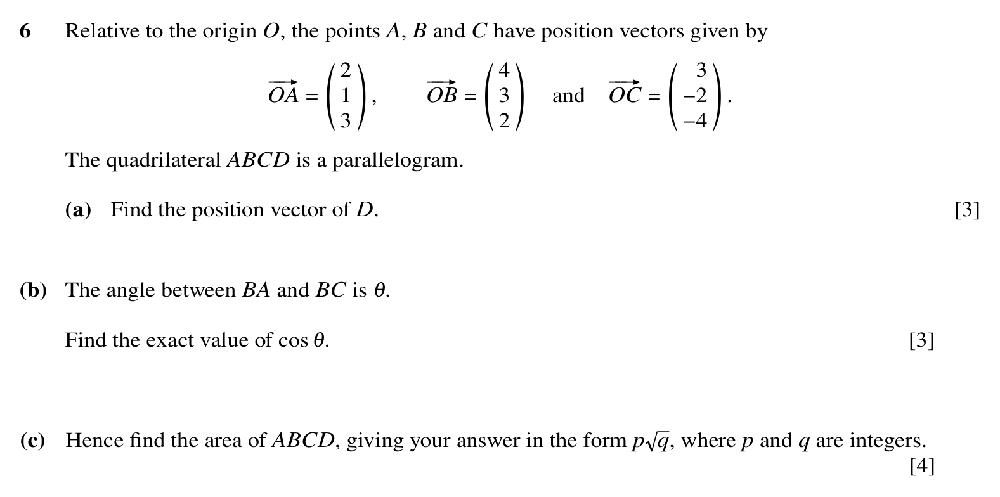
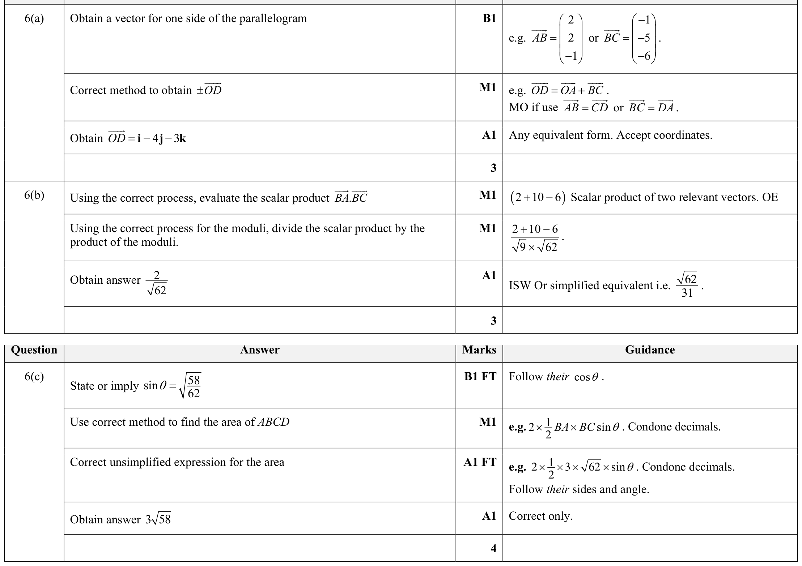

Paper 31summer23 Q6
Vectors
Self-marked exam work is useful practice evidence, but it is weaker than Checked Practice evidence.

Hint
Use the parallelogram relation first: find one side vector, then build the missing position vector for D.
Reveal Answer
